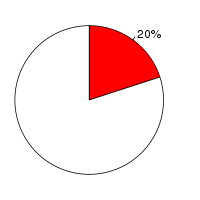

Pig (Sus scrofa, Sscrofa9) and Cow(Bos taurus, Btau_4.0) were aligned using the BlastZ alignment algorithm (Schwartz S et al., Genome Res.;13(1):103-7, Kent WJ et al., Proc Natl Acad Sci U S A., 2003;100(20):11484-9) in Ensembl release 57. Pig was used as the reference species. After running BlastZ, the raw BlastZ alignment blocks are chained according to their location in both genomes. During the final netting process, the best sub-chain is chosen in each region on the reference species.
Full list of pairwise alignmentsNumber of alignment blocks: 2507639
| Genome coverage(bp) | Coding exon coverage (bp) | |
|---|---|---|
| Pig |
|
|
| 647,129,795 out of 2,262,596,414 | 22,848,389 out of 24,439,764 | |
| Cow |  |
|
| 576,352,863 out of 2,918,205,644 | 22,761,353 out of 32,548,771 |